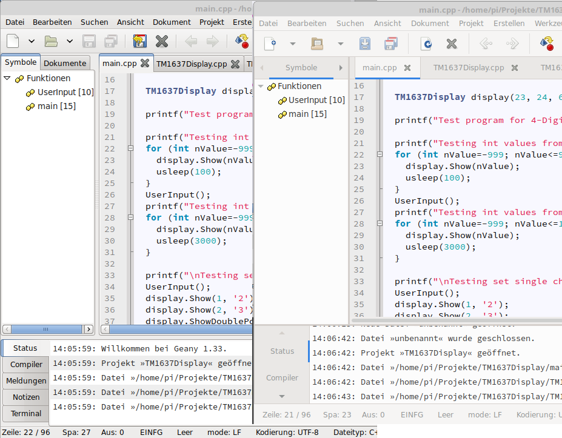

Ab Debian 10 Buster wird Geany mit GTK3 bereitgestellt. Deshalb kann es sinnvoll sein, die alte Version mit GTK2 auf der langsamen Raspberry Pi Zero zu installieren.
Beschreibung
Beim Wechsel von Raspbian mit Basis Debian 9 Stretch auf Raspbian mit Debian 10 Buster gab es auch einen Wechsel bei der Entwicklungsumgebung Geany. Statt der Version 1.29 mit GTK2, wird nun die Version 1.33 mit GTK3 zur Verfügung gestellt. GTK ist eine Bibliothek für die grafische Benutzeroberflächen (GUI) mit der Fenster, Dialog und sonstige Anzeigeelemente erzeugt werden. Leider ist die Performance von GTK3 auf der Raspberry Pi Zero merklich schlechter als bei GTK2. Falls man die alte Version als zusätzliches Programm bereitstellen möchte, hier eine Anleitung.
Installation
Geany 1.33 GTK3
sudo apt-get install geany stterm libvte9 libvte-2.91-0
Geany 1.29 GTK2
mkdir geany
cd geany
wget https://raspbian.bio.lmu.de/raspbian/pool/main/g/geany/geany_1.29-1_armhf.deb
sudo apt-get install unp
unp geany_1.29-1_armhf.deb
unp data.tar.xz
sudo cp usr/bin/geany /usr/bin/geany-gtk2
sudo mkdir /usr/lib/arm-linux-gnueabihf/geany-gtk2/
sudo cp -rv usr/lib/arm-linux-gnueabihf/* /usr/lib/arm-linux-gnueabihf/geany-gtk2/
mkdir common
cd common
wget https://raspbian.bio.lmu.de/raspbian/pool/main/g/geany/geany-common_1.29-1_all.deb
unp geany-common_1.29-1_all.deb
unp data.tar.xz
sudo cp usr/share/geany/geany.gtkrc /usr/share/geany/
sudo apt-get install libfreetype6 libfontconfig1 libgtk2.0-0 libpangoft2-1.0-0
Geany 1.33 GTK2 erstellen
Die Geany Version 1.33 mit der GTK2 Bibliothek kann selbst erstellt werden. Dies ist allerdings ein aufwendiger Prozess. Würde man das resultierende Debian Paket dann installieren wird die GTK3 Version ersetzt. Wir kopieren aber wieder die erzeugten Dateien zusätzlich auf das Raspbian System.
Zuerst besorgt man sich den Source-Code des Debian Paketes. Dann benötigt man noch alle Abhängigkeiten des Paketes und die GTK2 Development Library. Nun muss man den Source-Code entpacken. In der Datei “debian/rules” muss der Parameter “–enable-gtk3” entfernt werden. Danach kann das Paket neu erzeugt werden. Nun kopieren wir das neue Programm und die Bibliothekdateien in eine neue Datei bzw. Verzeichnis.
geany-gtk2.patch:
--- geany-1.33/debian/rules.old 2019-11-27 21:55:31.871256842 +0100
+++ geany-1.33/debian/rules 2019-11-28 22:27:55.832759732 +0100
@@ -10,7 +10,7 @@
NOCONFIGURE=1 dh_autoreconf ./autogen.sh
override_dh_auto_configure:
- dh_auto_configure -- --enable-vte --enable-the-force --enable-gtk3
+ dh_auto_configure -- --enable-vte --enable-the-force
sed -i -r 's,^sys_lib_dlsearch_path_spec="(.*)$$,sys_lib_dlsearch_path_spec="/usr/lib /lib \1,' $(CURDIR)/libtool
override_dh_auto_install:
sudo su -c "grep '^deb ' /etc/apt/sources.list | sed 's/^deb/deb-src/g' > /etc/apt/sources.list.d/deb-src.list"
sudo apt update
sudo apt install build-essential fakeroot devscripts
sudo apt-get build-dep geany
sudo apt-get install libgtk2.0-dev libgdk-pixbuf2.0-dev libatk1.0-dev libcairo2-dev libgio2.0-cil-dev libfreetype6-dev libpango1.0-dev
mkdir build
cd build
apt-get source geany
patch -p0 -i geany-gtk2.patch
cd geany-1.33
debuild -uc -us -b
sudo cp usr/bin/geany /usr/bin/geany-gtk2
sudo mkdir /usr/lib/arm-linux-gnueabihf/geany-gtk2/
sudo cp -rv usr/lib/arm-linux-gnueabihf/* /usr/lib/arm-linux-gnueabihf/geany-gtk2/
cd ..
Start
Bei Aufruf der GTK2 Version muss man den Pfad für die Bibliothek setzen, damit nicht die Version mit GTK3 Bibliothek geladen wird.
Aufruf geany mit GTK2:
LD_LIBRARY_PATH=/usr/lib/arm-linux-gnueabihf/geany-gtk2/ geany-gtk2
Bei einem alias Eintrag können die zwei Version direkt gestartet werden.
Alias für Aufruf “~/.bash_aliases”:
alias geany-gtk2="LD_LIBRARY_PATH=/usr/lib/arm-linux-gnueabihf/geany-gtk2/ geany-gtk2"
alias geany-gtk3="/usr/bin/geany"
Mit dem Aufruf geany kann dann je nach Systemleistung die GTK2 oder GTK3 Version gestartet werden.
Alias für Aufruf “~/.profile”:
function geany() {
if [ `cat /proc/cpuinfo | grep -e "^processor" | wc -l` = 1 ]; then
echo "start geany with GTK 2 (slow single core cpu)"
geany-gtk2 "$@"
else
geany-gtk3 "$@"
fi
}
Für einen optischer Vergleich der beiden Versionen siehe Bild (GTK2 Clearlooks Theme links, GTK3 rechts).

Einstellungen
Nach der Installation gab es beim Starten eines Programms immer das Problem, dass das Terminal Programm mit dem entwickelten Programm nicht ausgeführt werden konnte.

Das Problem kann gelöst werden indem man den internen Terminal für das Ausführen des Programms benutzt.
Bearbeiten -> Einstellungen bzw. Strg+Alt+P , Reiter Terminal
Die Optionen “Führe Programme in der VTE aus” und “Das Run-Skript nicht benutzen” müssen aktiviert werden.

Performancevergleich GTK3 zu GTK2
Folgende Zeit wurde ohne exakte Messung ermittelt und sind deshalb nur als Richtwert zu sehen.
Raspberry Pi Zero
| Aktion | GTK3 (Sek.) | GTK2 (Sek.) |
|---|---|---|
| Start | 8 | 4 |
| Fenster öffnen: Kommandos zum Erstellen konfigurieren | 2 | 1 |
| Fenster öffnen: Einstellungen | 7 | 2 |
| Beenden | 2 | 1 |
Raspberry Pi 2
| Aktion | GTK3 (Sek.) | GTK2 (Sek.) |
|---|---|---|
| Start | 4 | 2 |
| Fenster öffnen: Kommandos zum Erstellen konfigurieren | 1 | 1 |
| Fenster öffnen: Einstellungen | 3 | 1 |
| Beenden | 1 | 1 |
Style für GTK2 ändern
Die Optik der alten GTK2 Version schaut in der Standardkonfiguration recht altbacken aus. Ein anderes Theme wie z.B. “Clearlooks” gibt dem Programm einen modernen Look.
sudo apt-get install gtk-theme-switch gtk2-engines
gtk-theme-switch2
/home/pi/.gtkrc-2.0:
# -- THEME AUTO-WRITTEN BY gtk-theme-switch2 DO NOT EDIT
include "/usr/share/themes/Clearlooks/gtk-2.0/gtkrc"
include "/home/pi/.gtkrc-2.0.mine"
# -- THEME AUTO-WRITTEN BY gtk-theme-switch2 DO NOT EDIT
Youtube Video Review